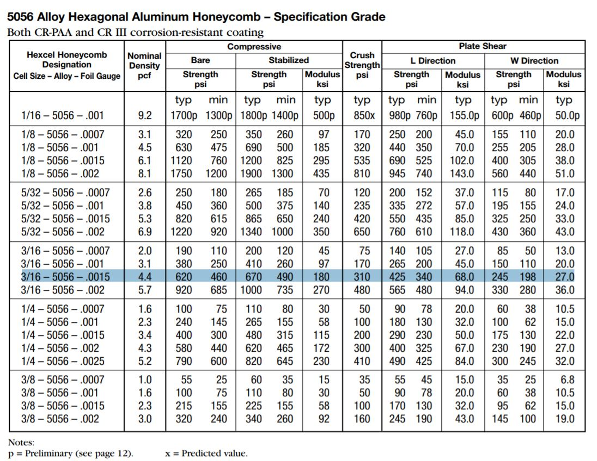
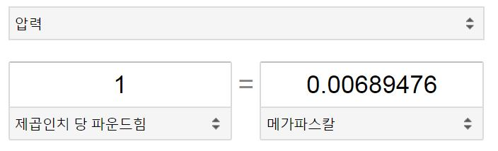
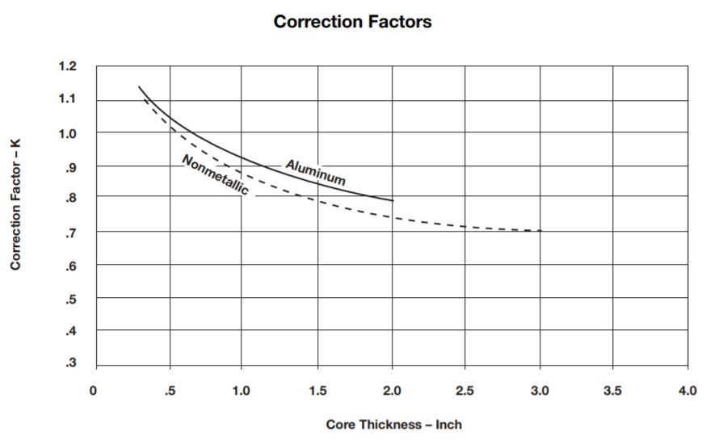

Ref : https://www.pccomposites.com/wp-content/uploads/2015/07/PCHC4-4TY4_TDS.pdf


1 psi = 0.00689476 MPa
0.625 in = 15.875mm
620 psi = 4.27 MPa
425 psi = 2.93 MPa
245 psi = 1.69 MPa
In case of 80% reduction correction factor
3.416 MPa, 2.344 MPa, 1.352 MPa
Nominally used
3.37 MPa, 2.34 MPa, 1.36 MPa

Honeycomb shear strength will vary with core thickness.
Referring to the tensile plate shear shown on page 11,it can be shown that the shear load induces a minorcomponent parallel to the cell axis that stretches thehoneycomb.The honeycomb, therefore, is not beingsubjected to pure shear but to a combination of shearand tension.Thicker cores will have a lower usableshear strength than thinner ones.In view of the above, one might conclude that a plotof usable shear strength vs. core thickness would showthe “true”core shear strength approached asymptotically with vanishing core thickness. However, for verythin cores the filleting of the core-to-skin adhesives hasa strengthening effect on the shear data. Normally, thefilleting depth is but a fraction of the core thickness, but for very thin cores this depth is a substantial fraction of the thickness and possibly the entire cell wallmay be filleted. Such a phenomenon would affect the“apparent”core shear strength considerably.Also, sincethe filleting depth depends on the adhesive used, testresults on thin cores vary from one adhesive to another.For the above reasons and in view of typical core thickness values in actual usage, as well as several aircraftcompany and military specifications, aluminum honeycomb is generally tested at 0.625" T while nonmetallichoneycomb is tested at 0.500" T. However, Hexcel isoften asked to qualify core materials to other thicknessvalues.The graph below, generated from actual Hexceldata, gives correction factors for both aluminum andnonmetallic honeycomb for values other than 0.625" Tand 0.500" T, respectively.The graph shows averagecorrection factors.